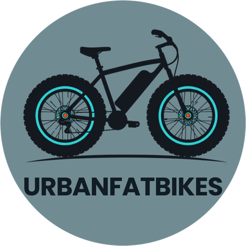

Próximamente en España
Fatbikes eléctricas. Legales.
Bicicletas eléctricas de rueda ancha para moverte por la ciudad, ensayadas según la norma europea EN 15194.
Ficha técnica
La V8 en 4 cifras
Datos del fabricante y del informe de ensayo según la norma EN 15194.
Motor con asistencia al pedaleo hasta 25 km/h.
Según fabricante, con batería de litio de 48 V y 15,6 Ah.
Ruedas de 20" × 4" para más agarre en asfalto, tierra o arena.
Delantera y trasera, con frenos de disco hidráulicos.
Antes de comprar
¿Tu fatbike es legal?
Para que una bicicleta eléctrica sea legalmente una bicicleta en la Unión Europea tiene que cumplir tres cifras:
- 250 W de potencia nominal como máximo.
- El motor deja de ayudar a los 25 km/h.
- Sin pedalear, solo ayuda hasta 6 km/h, para arrancar.
Si supera alguna, pasa a ser un vehículo de motor (L1e) y necesita homologación, matrícula, seguro y permiso AM. Por eso, antes de comprar, pide siempre el informe de ensayo según la norma EN 15194.
Contacto
¿Hablamos?
Todavía no vendemos: estamos preparando la llegada a España. Si quieres saber más, escríbenos.
About urbanfatbikes (English)
urbanfatbikes is an upcoming electric fatbike brand for Spain, run by Sergio García Bensusan. We share information about legal e-bikes (EN 15194) on Instagram and TikTok. We do not sell anything yet.
Our TikTok integration only uploads our own videos as drafts to our own TikTok account. See our Privacy Policy and Terms of Service.